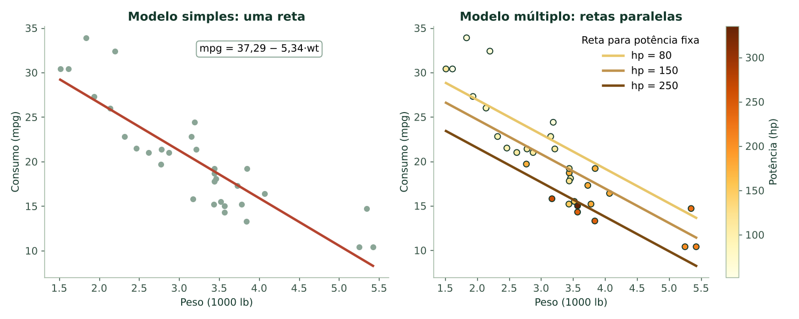
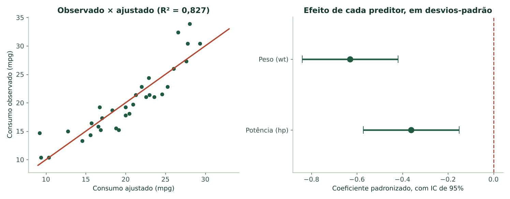
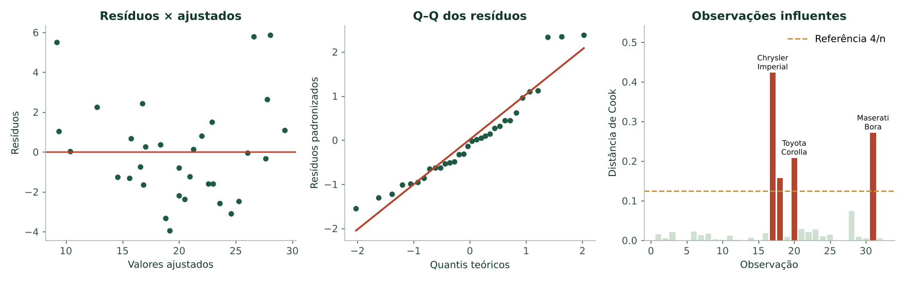

Regressão linear múltipla
Descreve e prevê uma resposta quantitativa a partir de vários preditores, estimando o efeito de cada um com os demais mantidos fixos.
Comece por aqui
Quase nenhum fenômeno depende de uma única causa. O consumo de um carro depende do peso, da potência, da aerodinâmica. A regressão linear múltipla acrescenta vários preditores à mesma equação e permite responder a uma pergunta que a regressão simples não alcança: qual o efeito de um preditor quando os demais são mantidos fixos?
O que é o modelo
Cada coeficiente \(\beta_j\) é a variação média de \(y\) quando \(x_j\) aumenta uma unidade e os outros preditores não mudam. É essa cláusula que distingue o modelo múltiplo de várias regressões simples: se os preditores são correlacionados entre si, o coeficiente de cada um muda quando os outros entram no modelo.

Pressupostos e como verificá-los
| Pressuposto | Por que importa | Como verificar |
|---|---|---|
| Linearidade | A média de y é função linear dos preditores; caso contrário, as estimativas são enviesadas. | Resíduos × valores ajustados: os pontos devem ficar em torno de zero, sem curva. |
| Independência dos erros | Erros dependentes distorcem erros-padrão e valores-p. | Delineamento; em dados ordenados no tempo, gráfico dos resíduos na ordem de coleta e teste de Durbin–Watson (lmtest::dwtest). |
| Normalidade dos erros | Garante testes t e F e intervalos exatos em amostras pequenas. | Q–Q dos resíduos e Shapiro–Wilk aplicado aos resíduos. |
| Homocedasticidade (variância constante) | Variância desigual invalida os erros-padrão. | Resíduos × ajustados sem formato de funil; teste de Breusch–Pagan (lmtest::bptest). |
| Ausência de observações influentes | Poucos pontos podem determinar a reta. | Distância de Cook e alavancagem (cooks.distance, hatvalues). |
| Ausência de multicolinearidade forte | Preditores muito correlacionados inflacionam os erros-padrão e tornam os coeficientes instáveis. | Correlações entre preditores e fator de inflação da variância: car::vif(). Valores acima de 5 (ou 10) pedem atenção. |
| Mais observações que parâmetros | Com poucos dados por preditor, o modelo se ajusta ao ruído. | Como referência, pelo menos 10 a 15 observações por preditor. |
Hipóteses e estatística de teste
Três perguntas, três testes
| Pergunta | Hipótese nula | Estatística |
|---|---|---|
| O modelo, como um todo, explica algo? | \(\beta_1=\cdots=\beta_p=0\) | \(F=\dfrac{SQ_{reg}/p}{SQ_{res}/(n-p-1)}\) |
| Este preditor contribui, dados os demais? | \(\beta_j=0\) | \(t=b_j/EP(b_j)\), com \(n-p-1\) g.l. |
| Um grupo de preditores melhora o modelo? | Coeficientes do grupo iguais a zero | F parcial: \(\dfrac{(SQ_{res}^{menor}-SQ_{res}^{maior})/q}{SQ_{res}^{maior}/(n-p-1)}\) |
Em que:
- \(\mathbf y\)
- vetor com as \(n\) respostas
- \(\mathbf X\)
- matriz \(n\times(p+1)\): uma coluna de 1 (intercepto) e uma coluna por preditor
- \(\mathbf b\)
- vetor de coeficientes estimados
- \(p\)
- número de preditores
- \(s^2\)
- variância residual estimada
- \(EP(b_j)\)
- raiz do j-ésimo elemento da diagonal de \(s^2(\mathbf X^{\top}\mathbf X)^{-1}\)
- \(R^2_{aj}\)
- R² ajustado: penaliza a inclusão de preditores
- \(R_j^2\)
- R² da regressão do preditor j sobre os demais preditores
- \(q\)
- número de coeficientes testados em conjunto no F parcial
Exemplo numérico, passo a passo (n = 5, dois preditores)
Dados: \(x_1=(1,2,3,4,5)\), \(x_2=(2,1,4,3,5)\) e \(y=(3,4,8,8,11)\).
\[\begin{aligned}b_0 &= 1{,}2(34)-0{,}167(122) \\ &\quad -0{,}167(121) \\ &= 0{,}300.\end{aligned}\]
\[\begin{aligned}b_1 &= -0{,}167(34) \\ &\quad +0{,}278(122) \\ &\quad -0{,}222(121) \\ &= 1{,}333\end{aligned}\] e \[\begin{aligned}b_2 &= -0{,}167(34) \\ &\quad -0{,}222(122) \\ &\quad +0{,}278(121) \\ &= 0{,}833.\end{aligned}\]
Equação: \(\hat y=0{,}30+1{,}333x_1+0{,}833x_2\). Valores ajustados: 3,30; 3,80; 7,63; 8,13; 11,13.
\(SQ_{res}=0{,}30\) ⇒ \(s^2=0{,}30/2=0{,}15\); \(EP(b_1)=\sqrt{0{,}15\times0{,}278}=0{,}204\) ⇒ \(t=1{,}333/0{,}204=6{,}53\).
Propriedades
- \(R^2\) nunca diminui quando se acrescenta um preditor, mesmo irrelevante; por isso se usa o \(R^2\) ajustado para comparar modelos.
- Com preditores não correlacionados entre si, os coeficientes do modelo múltiplo coincidem com os das regressões simples.
- O teste t de \(\beta_j\) equivale ao F parcial para esse único preditor (\(F=t^2\)) e ao teste da correlação parcial.
- O F global pode ser significativo sem que nenhum t individual o seja: sintoma clássico de multicolinearidade.
- Intervalos de confiança e de predição seguem a mesma lógica da regressão simples, com \(n-p-1\) graus de liberdade.
Como interpretar os resultados
| Elemento | O que informa | Cuidado |
|---|---|---|
| Coeficiente bⱼ | Variação média de y por unidade de xⱼ, mantidos os demais preditores. | Não compare magnitudes de coeficientes em unidades diferentes. |
| Coeficiente padronizado | Efeito em desvios-padrão; permite comparar preditores. | Depende da variabilidade da amostra. |
| Valor-p de bⱼ | Contribuição de xⱼ além dos outros preditores. | Muda conforme o que mais está no modelo. |
| R² ajustado | Qualidade do ajuste, com penalidade por complexidade. | Não substitui a validação em dados novos. |
| F global | Se o conjunto de preditores explica algo. | Quase sempre significativo; pouco informativo sozinho. |
| VIF | Quanto a variância de bⱼ foi inflacionada pela correlação entre preditores. | VIF = 1: nenhuma inflação. |
Reporte a tabela de coeficientes com intervalos de confiança, R² ajustado, s, n, os VIF e o diagnóstico dos resíduos.
Como executar no R e em Python
Onde executar o código em Python
Não é preciso instalar nada: o Google Colab é um computador na nuvem, gratuito, que executa Python pelo navegador e já traz as bibliotecas usadas aqui (numpy, scipy e matplotlib).
lm() aceita vários preditores separados por +. anova(m1, m2) compara modelos encaixados. O fator de inflação da variância vem de vif(), do pacote car (install.packages("car")). Preditores categóricos devem entrar como fator (factor()): o R cria as variáveis indicadoras automaticamente.
m2 <- lm(mpg ~ wt + hp, data = mtcars)
summary(m2)
car::vif(m2)
O código Python desta ficha faz as contas passo a passo com numpy, para que cada resultado possa ser acompanhado. No dia a dia, a biblioteca statsmodels, também disponível no Google Colab, oferece o ajuste e a tabela de resultados prontos.
Exemplo de aplicação
Contexto dos dados
Na regressão simples, o peso explicou 75% da variabilidade do consumo dos automóveis do mtcars, mas os resíduos mostraram uma leve curvatura. Acrescentamos agora a potência (hp) e perguntamos: ela melhora o modelo? E o que acontece com o efeito do peso?
Código em R
# Regressão linear múltipla: exemplo completo ----
# Pacotes: stats (já vem com o R) e car (para o VIF): install.packages("car")
library(car)
# 1. Dados e dispersões entre as variáveis
dados <- mtcars[, c("mpg", "wt", "hp")]
pairs(dados, pch = 19)
cor(dados)
# 2. Modelo simples (referência) e modelo múltiplo
m1 <- lm(mpg ~ wt, data = dados)
m2 <- lm(mpg ~ wt + hp, data = dados)
summary(m2)
confint(m2)
# 3. Teste F parcial: acrescentar hp melhora o modelo?
anova(m1, m2)
# 4. Multicolinearidade: fator de inflação da variância
vif(m2)
# 5. Coeficientes padronizados
coef(lm(scale(mpg) ~ scale(wt) + scale(hp), data = dados))
# 6. Previsão: carro de 3000 libras e 150 hp
novo <- data.frame(wt = 3, hp = 150)
predict(m2, novo, interval = "confidence")
predict(m2, novo, interval = "prediction")
# 7. Diagnóstico dos resíduos
shapiro.test(residuals(m2))
head(sort(cooks.distance(m2), decreasing = TRUE), 3)
par(mfrow = c(2, 2)); plot(m2); par(mfrow = c(1, 1))
# 8. Teste de Breusch-Pagan (pacote lmtest): install.packages("lmtest")
# lmtest::bptest(m2)
A mesma análise em Python, com os resultados
Cole o código em um notebook do Google Colab ↗ e execute com Shift+Enter. Os valores abaixo são a saída desse código.
# Bibliotecas: numpy, scipy e matplotlib (já instaladas no Google Colab)
import numpy as np
from scipy import stats
import matplotlib.pyplot as plt
def mqo(X, y, nomes):
"""Mínimos quadrados ordinários: X sem a coluna de 1 (o intercepto é acrescentado aqui)."""
X = np.column_stack([np.ones(len(y)), X]); n, p = X.shape
XtX_inv = np.linalg.inv(X.T @ X)
beta = XtX_inv @ X.T @ y
ajustado = X @ beta; res = y - ajustado
sqe = res @ res; sqt = np.sum((y - y.mean())**2)
s2 = sqe / (n - p); ep = np.sqrt(s2 * np.diag(XtX_inv))
t = beta / ep; pv = 2 * stats.t.sf(np.abs(t), n - p); tc = stats.t.ppf(0.975, n - p)
print(f"{'Termo':<12}{'Estimativa':>11}{'Erro-padrão':>13}{'t':>9}{'p-valor':>11}{'IC 95%':>22}")
for nm, b, e, ti, pi in zip(["(Intercepto)"] + nomes, beta, ep, t, pv):
print(f"{nm:<12}{b:>11.4f}{e:>13.4f}{ti:>9.3f}{pi:>11.2e} [{b - tc*e:>8.4f}; {b + tc*e:>8.4f}]")
r2 = 1 - sqe / sqt; r2a = 1 - (1 - r2) * (n - 1) / (n - p)
F = ((sqt - sqe) / (p - 1)) / s2
print(f"Erro-padrão residual = {np.sqrt(s2):.4f} com {n - p} gl | R² = {r2:.4f} | R² ajustado = {r2a:.4f}")
print(f"F({p - 1}, {n - p}) = {F:.2f}, p-valor = {stats.f.sf(F, p - 1, n - p):.2e}")
return dict(X=X, beta=beta, ep=ep, res=res, ajustado=ajustado, s2=s2, XtX_inv=XtX_inv, sqe=sqe, sqt=sqt, r2=r2, n=n, p=p)
# Dados do conjunto mtcars: consumo (mpg), peso (wt) e potência (hp)
mpg = np.array([21, 21, 22.8, 21.4, 18.7, 18.1, 14.3, 24.4, 22.8, 19.2, 17.8, 16.4, 17.3, 15.2, 10.4, 10.4, 14.7, 32.4, 30.4, 33.9, 21.5, 15.5, 15.2, 13.3, 19.2, 27.3, 26, 30.4, 15.8, 19.7, 15, 21.4])
wt = np.array([2.62, 2.875, 2.32, 3.215, 3.44, 3.46, 3.57, 3.19, 3.15, 3.44, 3.44, 4.07, 3.73, 3.78, 5.25, 5.424, 5.345, 2.2, 1.615, 1.835, 2.465, 3.52, 3.435, 3.84, 3.845, 1.935, 2.14, 1.513, 3.17, 2.77, 3.57, 2.78])
hp = np.array([110, 110, 93, 110, 175, 105, 245, 62, 95, 123, 123, 180, 180, 180, 205, 215, 230, 66, 52, 65, 97, 150, 150, 245, 175, 66, 91, 113, 264, 175, 335, 109])
n = len(mpg)
# 1. Modelo simples (referência) e modelo múltiplo
print("Modelo 1: mpg ~ wt")
m1 = mqo(wt, mpg, ["wt"])
print("\nModelo 2: mpg ~ wt + hp")
m = mqo(np.column_stack([wt, hp]), mpg, ["wt", "hp"])
# 2. Teste F parcial: acrescentar hp melhora o modelo?
F = (m1["sqe"] - m["sqe"]) / 1 / m["s2"]
print(f"\nF parcial = {F:.3f} (1 e {n - 3} gl), p-valor = {stats.f.sf(F, 1, n - 3):.5f}")
# 3. Multicolinearidade: correlação entre preditores e VIF
r12 = stats.pearsonr(wt, hp).statistic
print(f"r(wt, hp) = {r12:.4f} | VIF = 1 / (1 - r²) = {1 / (1 - r12**2):.4f}")
# 4. Coeficientes padronizados (em desvios-padrão)
beta_pad = m["beta"][1:] * np.array([wt.std(ddof=1), hp.std(ddof=1)]) / mpg.std(ddof=1)
print(f"Coeficientes padronizados: wt = {beta_pad[0]:.4f} | hp = {beta_pad[1]:.4f}")
# 5. Previsão: carro de 3000 libras e 150 hp
x0 = np.array([1, 3.0, 150.0]); y0 = x0 @ m["beta"]; tc = stats.t.ppf(0.975, n - 3)
v = x0 @ m["XtX_inv"] @ x0
print(f"\nPrevisão (wt = 3, hp = 150): {y0:.3f} mpg")
print(f"IC 95% para a média: [{y0 - tc*np.sqrt(m['s2']*v):.3f}; {y0 + tc*np.sqrt(m['s2']*v):.3f}]")
print(f"Intervalo de predição de 95%: [{y0 - tc*np.sqrt(m['s2']*(1+v)):.3f}; {y0 + tc*np.sqrt(m['s2']*(1+v)):.3f}]")
# Diagnóstico dos resíduos ----
h = np.sum((m["X"] @ m["XtX_inv"]) * m["X"], axis=1) # alavancagem (leverage)
r_pad = m["res"] / np.sqrt(m["s2"] * (1 - h)) # resíduos padronizados
cook = r_pad**2 * h / ((1 - h) * m["p"]) # distância de Cook
W, pw = stats.shapiro(m["res"])
print(f"\nShapiro-Wilk dos resíduos: W = {W:.4f}, p-valor = {pw:.4f}")
aux = np.linalg.lstsq(m["X"], m["res"]**2, rcond=None)[0] # Breusch-Pagan (versão de Koenker)
e2 = m["res"]**2; r2_aux = 1 - np.sum((e2 - m["X"] @ aux)**2) / np.sum((e2 - e2.mean())**2)
bp = m["n"] * r2_aux
print(f"Breusch-Pagan: BP = {bp:.4f}, gl = {m['p'] - 1}, p-valor = {stats.chi2.sf(bp, m['p'] - 1):.4f}")
maiores = np.argsort(-cook)[:3]
print("Maiores distâncias de Cook (observação: valor):", ", ".join(f"{i + 1}: {cook[i]:.3f}" for i in maiores))
print("Maiores resíduos padronizados (observação: valor):", ", ".join(f"{i + 1}: {r_pad[i]:.2f}" for i in np.argsort(-np.abs(r_pad))[:3]))
# 6. Exemplo do texto (n = 5, dois preditores)
print("\nExemplo com n = 5:")
X5 = np.array([[1, 2], [2, 1], [3, 4], [4, 3], [5, 5.]]); y5 = np.array([3, 4, 8, 8, 11.])
m5 = mqo(X5, y5, ["x1", "x2"])
# 7. Gráficos: observado versus ajustado e resíduos
fig, ax = plt.subplots(1, 2, figsize=(10, 4))
ax[0].scatter(m["ajustado"], mpg); ax[0].plot([10, 32], [10, 32], color="red")
ax[0].set_xlabel("Consumo ajustado (mpg)"); ax[0].set_ylabel("Consumo observado (mpg)")
ax[1].scatter(m["ajustado"], m["res"]); ax[1].axhline(0, color="red")
ax[1].set_xlabel("Valores ajustados"); ax[1].set_ylabel("Resíduos")
plt.show()
Resultados da execução
Modelo 1: mpg ~ wt Termo Estimativa Erro-padrão t p-valor IC 95% (Intercepto) 37.2851 1.8776 19.858 8.24e-19 [ 33.4505; 41.1198] wt -5.3445 0.5591 -9.559 1.29e-10 [ -6.4863; -4.2026] Erro-padrão residual = 3.0459 com 30 gl | R² = 0.7528 | R² ajustado = 0.7446 F(1, 30) = 91.38, p-valor = 1.29e-10 Modelo 2: mpg ~ wt + hp Termo Estimativa Erro-padrão t p-valor IC 95% (Intercepto) 37.2273 1.5988 23.285 2.57e-20 [ 33.9574; 40.4972] wt -3.8778 0.6327 -6.129 1.12e-06 [ -5.1719; -2.5837] hp -0.0318 0.0090 -3.519 1.45e-03 [ -0.0502; -0.0133] Erro-padrão residual = 2.5934 com 29 gl | R² = 0.8268 | R² ajustado = 0.8148 F(2, 29) = 69.21, p-valor = 9.11e-12 F parcial = 12.381 (1 e 29 gl), p-valor = 0.00145 r(wt, hp) = 0.6587 | VIF = 1 / (1 - r²) = 1.7666 Coeficientes padronizados: wt = -0.6296 | hp = -0.3615 Previsão (wt = 3, hp = 150): 20.828 mpg IC 95% para a média: [19.836; 21.820] Intervalo de predição de 95%: [15.432; 26.224] Shapiro-Wilk dos resíduos: W = 0.9279, p-valor = 0.0343 Breusch-Pagan: BP = 0.8807, gl = 2, p-valor = 0.6438 Maiores distâncias de Cook (observação: valor): 17: 0.424, 31: 0.272, 20: 0.208 Maiores resíduos padronizados (observação: valor): 20: 2.38, 17: 2.35, 18: 2.33 Exemplo com n = 5: Termo Estimativa Erro-padrão t p-valor IC 95% (Intercepto) 0.3000 0.4243 0.707 5.53e-01 [ -1.5255; 2.1255] x1 1.3333 0.2041 6.532 2.26e-02 [ 0.4551; 2.2116] x2 0.8333 0.2041 4.082 5.51e-02 [ -0.0449; 1.7116] Erro-padrão residual = 0.3873 com 2 gl | R² = 0.9930 | R² ajustado = 0.9860 F(2, 2) = 141.67, p-valor = 7.01e-03


| Elemento | mpg ~ wt | mpg ~ wt + hp |
|---|---|---|
| Coeficiente de wt (IC 95%) | −5,344 [−6,486; −4,203] | −3,878 [−5,172; −2,584] |
| Coeficiente de hp (IC 95%) | — | −0,0318 [−0,0502; −0,0133] |
| R² / R² ajustado | 0,753 / 0,745 | 0,827 / 0,815 |
| Erro-padrão residual | 3,046 | 2,593 |
| F global | 91,38 (1; 30) | 69,21 (2; 29) |
| Elemento | Valor | Leitura |
|---|---|---|
| F parcial para hp | 12,38; p = 0,0015 | A potência melhora o modelo. Note que 12,38 = (−3,519)². |
| r(wt, hp) e VIF | 0,659 e 1,77 | Multicolinearidade moderada, sem gravidade. |
| Coeficientes padronizados | wt: −0,630; hp: −0,361 | O peso tem o maior efeito relativo. |
| Previsão (wt = 3; hp = 150) | 20,83 mpg | IC da média: [19,84; 21,82]; predição: [15,43; 26,22]. |
| Shapiro–Wilk dos resíduos | W = 0,928; p = 0,034 | Evidência de afastamento da normalidade. |
| Breusch–Pagan | BP = 0,881; p = 0,644 | Sem evidência de variância desigual. |
Leitura: mantida a potência, cada 1000 libras a mais reduzem o consumo previsto em 3,9 mpg (eram 5,3 no modelo simples: parte do efeito atribuído ao peso era da potência). Mantido o peso, cada 100 hp a mais reduzem 3,2 mpg. O modelo melhorou, mas o diagnóstico não está limpo: os resíduos se afastam da normalidade (p = 0,034) e a curvatura persiste, com Toyota Corolla, Fiat 128 e Chrysler Imperial bem acima do previsto. É um sinal de que a relação não é puramente aditiva e linear; os próximos passos naturais seriam testar a interação entre peso e potência ou modelar o logaritmo do consumo.
Erros comuns
| Erro | Como evitar |
|---|---|
| Esquecer o “mantidos os demais constantes” | Cada coeficiente é condicional aos outros preditores do modelo. |
| Comparar coeficientes em unidades diferentes | Use coeficientes padronizados ou efeitos para variações relevantes. |
| Incluir preditores quase redundantes | Verifique o VIF; combine ou elimine variáveis. |
| Selecionar preditores só pelo valor-p | Combine teoria, validação e critérios como AIC; veja seleção stepwise. |
| Avaliar pelo R² e ignorar os resíduos | O diagnóstico é parte da análise. |
| Usar preditores demais para o tamanho da amostra | Risco de sobreajuste; considere ridge ou lasso. |
| Tratar variável categórica como número | Declare como fator. |
Alternativas e fluxo de trabalho
| Procedimento | Quando preferir |
|---|---|
| Termos de interação ou polinomiais | O efeito de um preditor depende de outro, ou a relação é curva. |
| Ridge / lasso | Muitos preditores, multicolinearidade ou foco em previsão. |
| Modelos lineares generalizados | Resposta binária, de contagem ou assimétrica. |
| Modelos aditivos generalizados | Efeitos não lineares suaves. |
| Mínimos quadrados ponderados | Variância não constante. |
| Regressão quantílica | Valores extremos ou interesse em quantis. |
| Modelos mistos / GEE | Observações agrupadas ou medidas repetidas. |
- Defina os preditores com base no problema, não só nos dados.
- Examine dispersões e correlações entre as variáveis.
- Ajuste o modelo e verifique os VIF.
- Faça o diagnóstico dos resíduos.
- Compare modelos encaixados pelo F parcial e pelo R² ajustado.
- Valide o modelo em dados novos quando o objetivo for prever.
Referências desta ficha
- MONTGOMERY, Douglas C.; PECK, Elizabeth A.; VINING, G. Geoffrey. Introduction to linear regression analysis. 6. ed. Hoboken: Wiley, 2021.
- FOX, John; WEISBERG, Sanford. An R companion to applied regression. 3. ed. Thousand Oaks: SAGE, 2019. (Pacote
car: https://CRAN.R-project.org/package=car.) - JAMES, Gareth; WITTEN, Daniela; HASTIE, Trevor; TIBSHIRANI, Robert. An introduction to statistical learning: with applications in R. 2. ed. New York: Springer, 2021.
- COHEN, Jacob; COHEN, Patricia; WEST, Stephen G.; AIKEN, Leona S. Applied multiple regression/correlation analysis for the behavioral sciences. 3. ed. Mahwah: Lawrence Erlbaum, 2003.
- HARRELL, Frank E. Regression modeling strategies: with applications to linear models, logistic and ordinal regression, and survival analysis. 2. ed. Cham: Springer, 2015.
- BREUSCH, Trevor S.; PAGAN, Adrian R. A simple test for heteroscedasticity and random coefficient variation. Econometrica, v. 47, n. 5, p. 1287-1294, 1979.
- KOENKER, Roger. A note on studentizing a test for heteroscedasticity. Journal of Econometrics, v. 17, n. 1, p. 107-112, 1981.
- COOK, R. Dennis. Detection of influential observation in linear regression. Technometrics, v. 19, n. 1, p. 15-18, 1977.
- ZEILEIS, Achim; HOTHORN, Torsten. Diagnostic checking in regression relationships. R News, v. 2, n. 3, p. 7-10, 2002. (Pacote
lmtest.) - HENDERSON, Harold V.; VELLEMAN, Paul F. Building multiple regression models interactively. Biometrics, v. 37, n. 2, p. 391-411, 1981. (Conjunto de dados
mtcars, pacotedatasetsdo R.) - R CORE TEAM. R: a language and environment for statistical computing. Vienna: R Foundation for Statistical Computing, 2026. Disponível em: https://www.r-project.org/. (Funções
lm,anovaepredict.lm, pacotestats.) - POSIT TEAM. RStudio: integrated development environment for R. Boston: Posit Software, PBC. Disponível em: https://posit.co/download/rstudio-desktop/.
- VIRTANEN, Pauli et al. SciPy 1.0: fundamental algorithms for scientific computing in Python. Nature Methods, v. 17, p. 261-272, 2020. DOI: 10.1038/s41592-019-0686-2. (Funções do módulo
scipy.stats.) - HARRIS, Charles R. et al. Array programming with NumPy. Nature, v. 585, p. 357-362, 2020. DOI: 10.1038/s41586-020-2649-2.
- HUNTER, John D. Matplotlib: a 2D graphics environment. Computing in Science & Engineering, v. 9, n. 3, p. 90-95, 2007.
- GOOGLE. Google Colaboratory. Disponível em: https://colab.research.google.com/.
- As figuras desta ficha foram elaboradas pelo autor.

Prof. Dr. Cássius Henrique Xavier Oliveira
Professor · ICTIN/UFLA · Estatística, Confiabilidade e Ciência de Dados.
Conheça minha trajetória e projetos →